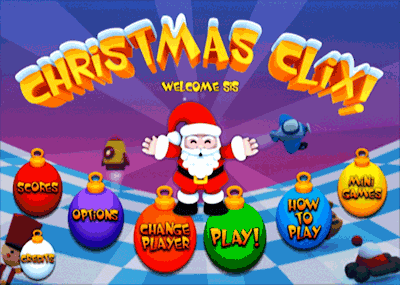

À Noël, le Père Noël ne fait pas que travailler !
Il s’amuse aussi et voudr

ait
bien que tu viennes le rejoindre !
Alors que le Père Noël empile les cadeaux de Noël comme par
magie, tu dois les enlever et en décorer l’arbre de Noël.
Pour commencer :
Pour faire une sélection, déplace le pointeur sur une
décoration et appuie sur le bouton A.

Changement de joueur :
Ceci te permet de créer un nouveau joueur ou de laisser
quelqu’un d’autre jouer.
Jouer :
Sélectionne « play » (jouer) pour commencer à aider le Père
Noël ou continue depuis l’emplacement précédent.
Pointage :
Appuie sur « score » (pointage) pour connaître la personne
affichant le pointage et le niveau le plus élevé. Le Père
Noël sait qui est le meilleur.
 Options
:
Options
:
Les options te permettent de modifier le volume de la
musique et des effets sonores.
Comment jouer :
On t’explique avec des images comment jouer avec Christmas
Clix.
Parfois une image peut en dire long.
Mini jeux :
Ici tu peux jouer de nouveau avec l’un des mini jeux que tu
as auparavant déverrouillés. Peux-tu faire mieux ?
Générique :
Fais connaissance avec tous les gens qui se sont amusés à
aider le Père Noël à créer Christmas Clix.